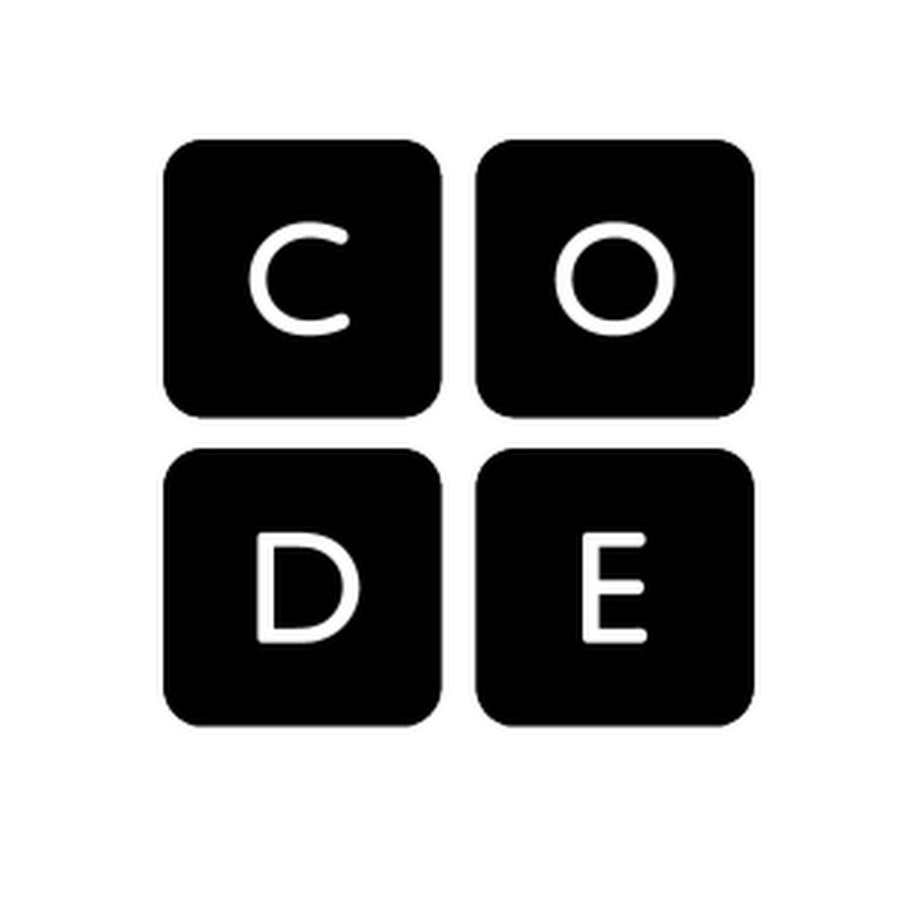

About the Bm programming language
B minor (Bm) is a futuristic, event-driven programming language designed for real-time, adaptive computing. It combines declarative and imperative paradigms, allowing developers to define reactive workflows with minimal boilerplate. The syntax is concise, resembling Python, but with built-in concurrency primitives similar to Go. Instead of traditional functions, FluxScript uses "streams" and "nodes," where data flows dynamically between processing units. The language is type-inferred but allows for optional strict typing, making it flexible yet robust. Its built-in AI-assisted optimization engine predicts performance bottlenecks and restructures code at runtime for maximum efficiency. Bm is particularly suited for high-frequency trading, IoT automation, and AI-driven applications.
